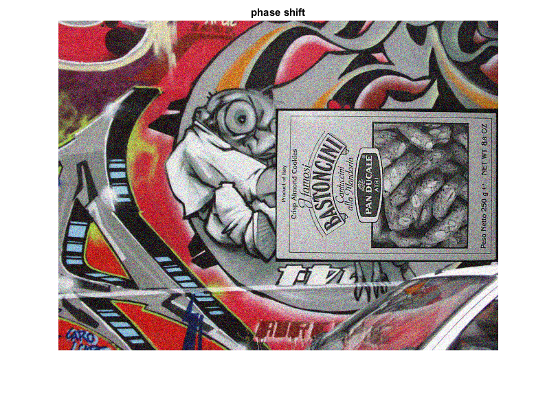
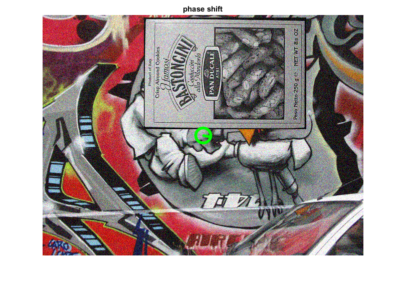

Phase Correlation
Demonstrates estimating translational shift between two successive frames using Phase Correlation.
Sources:
Contents
Prepare video source
vid = createVideoCapture([], 'book'); pause(1); assert(vid.isOpened(), 'Could not initialize capturing'); frame = vid.read(); assert(~isempty(frame), 'Could not read data from the video source'); hImg = imshow(frame); title('phase shift') % window function to reduce edge effects [h,w,~] = size(frame); center = round([w h]/2); hannW = cv.createHanningWindow([w h]);
Main loop
curr = cv.cvtColor(frame, 'RGB2GRAY'); while ishghandle(hImg) % get frame frame = vid.read(); if isempty(frame), break; end % keep track of previous and current grayscale images prev = curr; curr = cv.cvtColor(frame, 'RGB2GRAY'); % estimate shift using phase correlation shift = cv.phaseCorrelate(double(prev), double(curr), 'Window',hannW); radius = hypot(shift(1), shift(2)); if radius > 3 % draw a circle and line indicating the shift direction frame = cv.circle(frame, center, round(radius), ... 'Color',[0 255 0], 'Thickness',3, 'LineType','AA'); frame = cv.line(frame, center, center+round(shift), ... 'Color',[0 255 0], 'Thickness',3, 'LineType','AA'); end % show result set(hImg, 'CData',frame); drawnow; end vid.release();